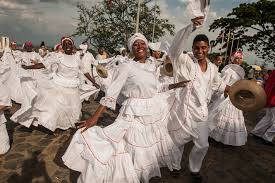

Biografia marc antony
Marco Antonio Muñiz Rivera (Nueva York, 16 de septiembre de 1968) mejor conocido por su nombre artístico Marc Anthony, es un cantante y actor estadounidense de origen puertorriqueño, cuyos temas van desde la salsa, pasando por el bolero, la balada y el pop. Empezó su carrera discográfica en el género hip hop con el dúo Little Louie & Marc Anthony llegando al nº 1 de las listas estadounidenses en 1991. Ralph Mercado lo fichó para su sello RMM en esa fecha y lo lanzó cantando salsa, consiguiendo un gran éxito que duró años, desde su primer single con la canción "Hasta que te conocí" de Juan Gabriel que fue nº1 en ventas. Más tarde triunfó también en España de la mano de Jorge E. Gómez con la compañía Bat Discos, siendo de los primeros artistas latinos de salsa en alcanzar discos de oro en ese país.

El currulao
es un ritmo musical, aunque estrictamente hablando hace referencia al baile folclórico colombiano autóctono de la Región Pacífica, cuyas variantes también se pueden observar en regiones de Ecuador. Tradicionalmente fue conocido como bambuco viejo, y es un baile orientado hacia el cortejo. Su origen está estrechamente relacionado con la cultura afrodescendiente de la región 1. La palabra feo hace alusión a la palabra "Cununao" que hace referencia los tambores de origen africano y que desempeñan un papel importante dentro del folclor de la Región Pacífica colombiana, los cununos. También hace parte de las danzas típicas de Colombia.
Merengue
Salsa
Rock
Balada
Vallenato
Reggueton
jass